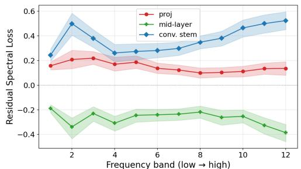

Visual SSL / representation · P1 · 2026-06-04
Beyond Compression：通用 SSL/VLM 表征常被投影到共享 embedding space，这篇帮助判断“压缩之外”到底丢了哪些视觉结构
提供一种冻结模型的表征诊断工具，分析 CLIP 投影、DINOv2 [CLS] pooling 和层深变化如何改变视觉频谱信息。
编号2606.03795
优先级P1
类别Visual SSL / representation
会议arXiv
方法用 band-limited Fourier energy 的线性可恢复性衡量表征的 spatial-frequency accessibility，并提出 Residual Spectral Loss，与同维随机投影 baseline 比较，隔离简单压缩造成的信息损失。
来源arXiv / OpenReview
先说结论。通用 SSL/VLM 表征常被投影到共享 embedding space，这篇帮助判断“压缩之外”到底丢了哪些视觉结构。 提供一种冻结模型的表征诊断工具，分析 CLIP 投影、DINOv2 [CLS] pooling 和层深变化如何改变视觉频谱信息。


核心问题
通用 SSL/VLM 表征常被投影到共享 embedding space，这篇帮助判断“压缩之外”到底丢了哪些视觉结构。
方法拆解
用 band-limited Fourier energy 的线性可恢复性衡量表征的 spatial-frequency accessibility，并提出 Residual Spectral Loss，与同维随机投影 baseline 比较，隔离简单压缩造成的信息损失。
主要贡献
提供一种冻结模型的表征诊断工具，分析 CLIP 投影、DINOv2 [CLS] pooling 和层深变化如何改变视觉频谱信息。
实验看点
摘要称在 CLIP 与 DINOv2、ImageNet 与 MS-COCO 上都观察到一致的频率依赖变化；中间层频谱可访问性最高，输出层下降。
局限与读法
频谱可恢复性不等价于语义、对象组合或下游泛化；需要与 IdEst、binding、linear probe 等指标联合解释。